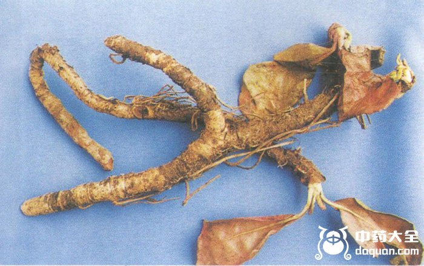

岩白菜具有止血、滋补强壮和补肺化痨的作用，岩白菜被制作成片剂，具有止咳化痰的功效，对支气管炎和肺炎症引起的咳嗽有很好的效果，下面中药大全小编和大家来看看岩白菜的功效与作用。

【岩白菜的功效与作用】止血、滋补强壮、补肺化痨
【功能主治】治虚弱头晕，劳伤咳嗽，吐血，咯血，淋浊，白带，肿毒。
①《植物名实图考》："治吐血。"
②《分类草药性》："化痰止咳。治一切内伤吐血，气喘，淋症。"
③《峨嵋药植》："治头晕虚弱，为治痨要药。"
④《四川中药志》："滋补强壮，止血，止咳。治肝脾虚弱，劳伤吐血，内伤咯血，肺病咳喘，妇女白带及男子淋浊;外敷无名肿毒。"
【用法与用量】
内服：煎汤，鲜者2～4两。
外用：适量，鲜品捣敷;或研末调敷
【别名】呆白菜、矮白菜、岩壁菜
【成份】岩白菜全草含岩白菜素等香豆精类。厚叶岩白菜的成分见药理作用项。
【禁忌】虚弱人有外感发热者慎用。
以上为岩白菜的功效与作用，查看更多中药请关注中药大全。